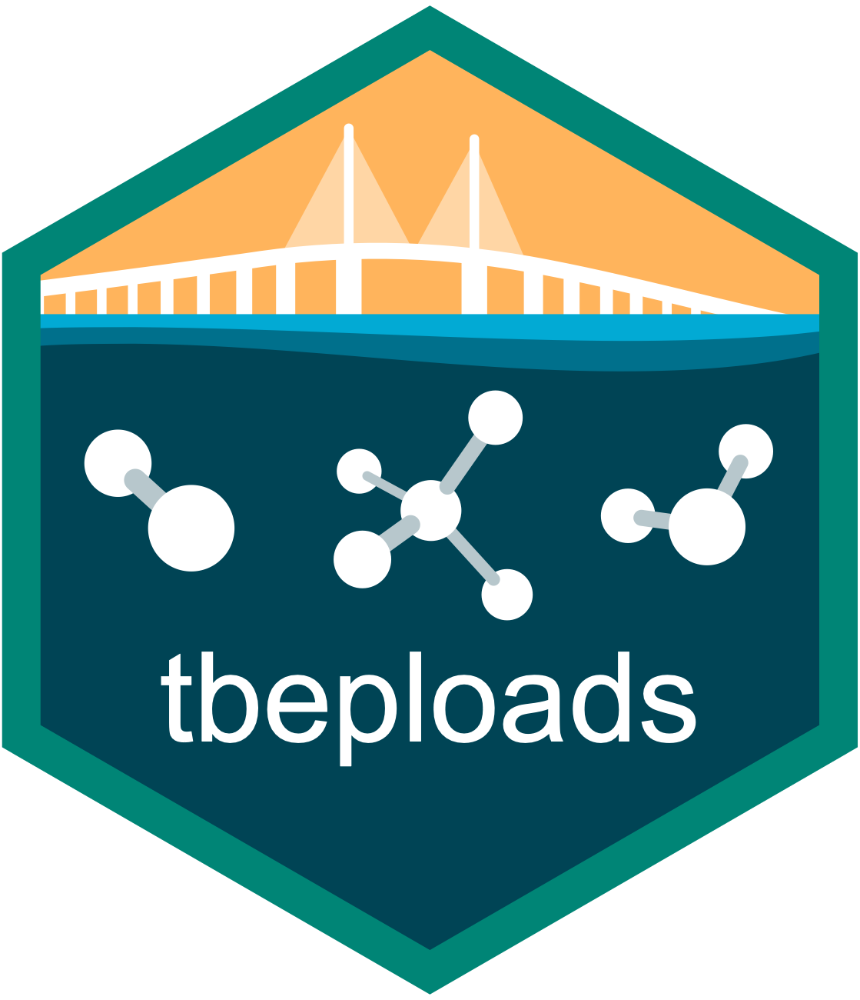

Create Pasco Reuse point source input data
Source:R/util_ps_pascoreuse.R
util_ps_pascoreuse.RdCreate Pasco Reuse point source input data from external hydrologic volume inputs and a constant TN concentration
Arguments
- yr
integer vector of years
- res
numeric vector of residential reuse volumes (million gallons per year x 1000), one value per year
- golf
numeric vector of golf course reuse volumes (million gallons per year x 1000), one value per year
- ribs
numeric vector of rapid infiltration basin volumes (million gallons per year x 1000), one value per year
- ag
numeric vector of agricultural reuse volumes (million gallons per year x 1000), one value per year
- tn_conc
numeric, constant TN concentration in mg/L applied to all records (default
9)- n_coastal
integer, number of coastal bay segment codes over which flow is divided equally (default
2)
Value
A data.frame with one row per year-month combination and columns:
- Permit.Number
character,
"PascoReuse"- Facility.Name
character,
"Pasco Reuse"- Outfall.ID
character,
"R-001"- Year
integer
- Month
integer, 1–12
- Average.Daily.Flow..ADF...mgd.
numeric, average daily flow in MGD
- Total.N
numeric, TN concentration in mg/L
- TN.Unit
character,
"mg/l"- Total.P
numeric, 0
- TP.Unit
character,
"mg/l"- TSS
numeric, 0
- TSS.Unit
character,
"mg/l"- BOD
numeric, 0
- BOD.Unit
character,
"mg/l"
Details
Pasco County reuse hydrologic inputs are provided externally as annual volumes (in million gallons per year x 1000) broken into
land use categories: residential, golf courses, rapid infiltration basins (RIBs), and agriculture.
These are summed and converted to million gallons (MG) per year, then distributed evenly across
12 months and divided equally across n_coastal coastal bay segment codes to produce average
daily flow in MGD. A constant TN concentration of tn_conc mg/L is assumed. TP, TSS, and
BOD are set to zero.
The output format matches the standard point source input data frame used by anlz_dps_facility.
Examples
util_ps_pascoreuse(
yr = 2022:2024,
res = c(744120, 522273, 344189),
golf = c(0, 0, 0),
ribs = c(0, 0, 0),
ag = c(169, 269, 153)
)
#> # A tibble: 36 × 14
#> Permit.Number Facility.Name Outfall.ID Year Month Average.Daily.Flow..ADF.…¹
#> <chr> <chr> <chr> <int> <int> <dbl>
#> 1 PascoReuse Pasco Reuse R-001 2022 1 1.00
#> 2 PascoReuse Pasco Reuse R-001 2022 2 1.11
#> 3 PascoReuse Pasco Reuse R-001 2022 3 1.00
#> 4 PascoReuse Pasco Reuse R-001 2022 4 1.03
#> 5 PascoReuse Pasco Reuse R-001 2022 5 1.00
#> 6 PascoReuse Pasco Reuse R-001 2022 6 1.03
#> 7 PascoReuse Pasco Reuse R-001 2022 7 1.00
#> 8 PascoReuse Pasco Reuse R-001 2022 8 1.00
#> 9 PascoReuse Pasco Reuse R-001 2022 9 1.03
#> 10 PascoReuse Pasco Reuse R-001 2022 10 1.00
#> # ℹ 26 more rows
#> # ℹ abbreviated name: ¹Average.Daily.Flow..ADF...mgd.
#> # ℹ 8 more variables: Total.N <dbl>, TN.Unit <chr>, Total.P <dbl>,
#> # TP.Unit <chr>, TSS <dbl>, TSS.Unit <chr>, BOD <dbl>, BOD.Unit <chr>